辨证云 中医 AI 数智平台
基础模型 + 专病模型 · 数据及训练引擎 & 算法及规则引擎
中医临床辅助辨证平台 · 中医数智传承零代码开发平台
名老中医专科专病智能体集群（Agent Cluster）
研发历程
从国家“七五”科技攻关到全国 800 县域医联体推广，四十年持续迭代与临床验证
主要研究人员承担国家“七五”科技攻关及科技部、教育部中医信息化和专家系统项目。
完成 4000 多例临床验证和专家鉴定，作为首例中医类软件技术出口项目推广到美国等数十个国家和地区。
在北美、欧洲、东南亚近千所中医及针灸医疗和教育机构推广应用。
系统全面优化升级，并开发 iOS 和安卓移动端版本。
开发全科医生助手机器人，开展国家卫计委智能赋能基层医疗示范项目部署。
全科医生助手机器人赋能基层医疗/医共体建设，在安徽省旌德县推广应用至村级卫生室。
开放 API 接口支持第三方调用服务，医生版（PC、H5、小程序）上线。
系统对接企业微信，实现医生、患者、诊所、药店服务、药品电商平台一体化。
助力香港新冠诊疗与防控，推出中医 AI 数智化零代码开发平台，开展中医云传承服务。
借助科大讯飞“智医助理”平台，助力全国基层医疗，在安徽亳州、滁州、宣城 300 余家乡镇卫生院上线应用。
历时两年开发完成并发布张仲景《伤寒杂病论》六经辨证和金匮杂病“经方大师”系列；开始在全国 800 多个县域医联体推广。
在宁夏回族自治区中医院、固原市中医院及下属县级中医院和乡镇卫生院部署应用；国医大师朱良春数智传承工作室正式落地推广；同仁堂连锁药店及医馆试运行上线；成为北京市东城区“AI 六小龙”企业。
浙江省中医院互联网医院 HIS 系统对接、浙江省名中医研究院数智传承项目规划；山西省儿童医院、晋中市妇幼保健院等中医数智传承项目启动；山东省潍坊市益都中心医院 HIS 系统对接；与科大讯飞达成全国战略合作；发布支持混合专家模型（MoE）并行推理的专家会诊功能。
系统展示（一）
中医 AI 传承应用平台：胃脘痛【徐经世专科】辨证施治演示
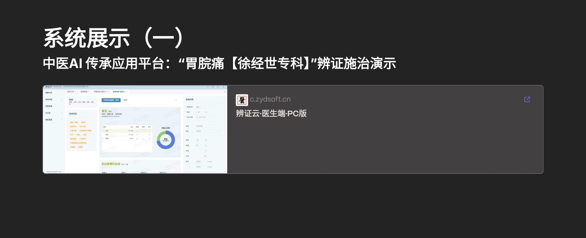
多终端入口
PC、H5、小程序、APP 与 Chat Box 全端覆盖，随时随地接诊。
四诊合参
基于症状主症，智能输出证型、治法、主方与适宜疗法。
推理可视化
可视化辨证思维链，辅助医生理解 AI 决策依据。
疗效闭环
支持疗效评估、复诊一体化与处方全周期管理。
辨证云医生端 PC 版以胃脘痛【徐经世专科】为例，展示中医 AI 辨证施治的完整工作流，覆盖症状采集、证型推理、主方推荐与加减化裁。点击图片可放大查看，放大后底部视频链接可点击播放。
中医 AI 辨证的“五同五不同”
通过双引擎推理，还原真实临床环境下中医辨证施治的复杂性与个性化
同病不同证
相同的病症通过中医 AI 引擎推理可以辨证出不同的证型，体现辨证论治的个体化核心。
同证不同方
相同的证型可以通过中医 AI 推理辨证出不同的中药配方，匹配不同流派与专家经验。
同方不同药
通过中医 AI 推理辨证实现用药的加减配伍，灵活调整处方组成。
同药不同量
通过中医 AI 推理辨证根据患者的实际症候，实现精确的用药用量。
同量不同制
根据患者的实际症候，中医 AI 还可以推理辨证出药物不同的炮制方法。
核心原则
安全、有效、专业、全面——为临床提供可信赖的中医 AI 辅助决策
安全性
数百万患者临床实际应用，无一例医疗纠纷和用户投诉，系统经过长期真实世界验证。
有效性
经双盲验证，专科病种与中医专家诊疗路径及主方符合率达 95% 以上。
专业性
为医生提供专业的中医辨证施治辅助诊疗系统，为大众用户提供常见病症的中医辨证自诊工具。
全面性
涵盖 400 余种病症，提供临床标准诊疗路径和国医大师、名老中医专病专科数字分身方案。
更多的创新与特色
多维度症候建模，提升辨证精准度与个性化治疗能力
症候程度评估
将患者的症候频次和严重程度划分为五个等级：偶尔（略微）、较少（有点）、较多（一般）、很多（非常）、总是（极其），为问诊提供客观化标准。通过系统化的评估，把患者主观感受量化为客观数据，避免描述不清或感知差异导致的诊断偏差，提高治疗有效性和准确性。
子午归经（发作时间）
子午归经是中医圣贤发现的规律，人体十二经脉对应每日十二个时辰，气血在不同时辰有盛有衰。辨证云将古代智慧与现代人工智能算法深度融合，通过精准分析症候的发作时间，生成更为个性化、精准的治疗方案。
六经传变（持续时日）
六经传变指伤寒病按太阳、阳明、少阳、太阴、少阴、厥阴等六经的病理阶段传变规律，也可用于定义症候发作持续时间。系统将六经传变理论与现代人工智能算法相结合，通过对患者症候持续时日的跟踪分析，提供更为个性化和精准的治疗方案。
辨证 AI + 全面的治疗方案
基于人工神经网络，通过基础模型创建专病模型，提供数据和算法的双推理引擎。由主症入手，四诊合参，建立中医辨证复合推理模型，模拟临床真实环境下的辨证施治过程，输出理法方药，并提供传统方剂、现代中成药、针灸、指压、食疗药膳等适宜疗法的多种处方组合。
合病合方
合病或合证指两个或以上病/证型的症候同时出现，呈现多证共存、病情复杂、变化多端的特点。系统通过详尽的推理规则和数据分析，将合证的量化特征以数据形式提供给医者，作为临证决策是否需要“合方”的依据。例如胁痛患者同时出现肝气郁结和瘀血阻络证，可按照疏肝理气与活血通络原则同时组方。
疗效评估 + 复诊一体化
系统支持医患双向疗效评估反馈机制，构建人工智能的自我学习与优化体系。通过一体化的初诊、复诊流程，医生可根据患者最新病情调整治疗方案，优化药物剂量和配伍，确保治疗的持续性和有效性。
多流派、多专家会诊
基于混合专家模型（MoE）的并行推理能力，将多流派、多专家会诊的中医经验进行系统融合与客观量化，实现多流派诊疗逻辑的并行对比分析，为中医临床多流派研究提供可重复的数据支持，突破传统经验主观性强、难以标准化的瓶颈。
中医 AI 辨证施治深度神经网络
基于贝叶斯推理与人工神经网络，模拟临床真实辨证施治过程
概率推理示例
以“感冒时风寒型的概率”为例：先验概率 P(B)=33.00%；风寒感冒时流清涕的概率（似然）P(A|B)=76.00%；感冒时流清涕的概率（证据）P(A)=52.00%；流清涕时风寒型感冒的概率（后验概率）P(B|A)=48.23%。
人工神经网络虚拟图
以胃脘痛【徐经世专科】为例，展示正相关权重网络。注：图示尚未包含症候程度、子午归经、六经传变等多维参数，实际推理引擎会综合全部维度。
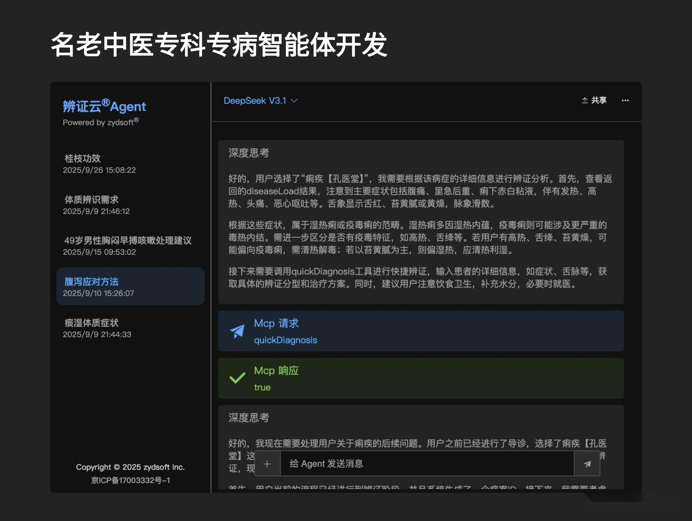
辨证云应用架构全景
多层架构设计，覆盖基础云平台、专业模型、订阅服务与智能体集群
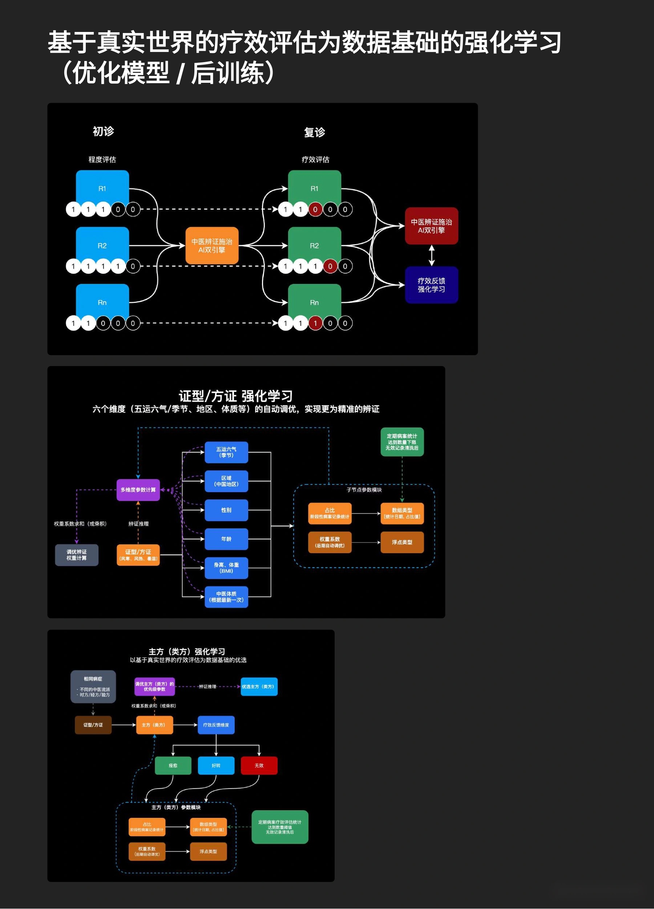
基础模型与知识图谱
千万级中医知识图谱，亿级权重参数，支撑精准辨证施治
知识图谱
千万级中医知识图谱，涵盖证型、方证、主方优选、中药及穴位加减化裁、中成药等，为辨证推理提供结构化知识支撑。
权重参数
基本权重 1.05 亿（包括症候、证型、方证）；扩展权重 6.30 亿（包括基本权重及症候程度、子午归经、六经传变等多维度参数）。
多模态症候表达
支持文字解释、图片、视频等多模态信息，以及程度评估、子午归经、六经传变等维度，提升症候描述的完整性与客观性。
适宜疗法与临证参考
除传统方剂外，还提供针灸指压、耳针、头针、中成药、食疗药膳、验方、养生调理治未病，以及专家经验、医理诠释、中医辨证思维链等临证参考。
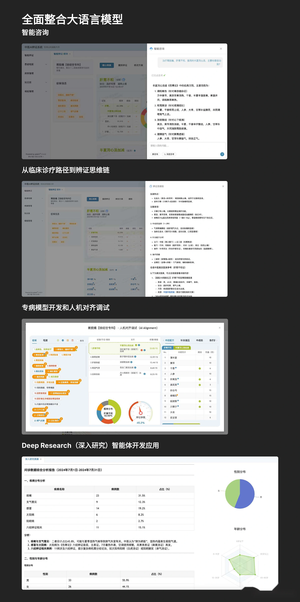
专病模型
基于混合专家模型（MoE）推理架构，低成本、快速、高效开发名老中医传承专病模型
结构模型
- 为弥补中医临床病案数据不足，通过临床专家提供的专病诊疗路径，快速构建专病模型的基本结构和属性。
- 也可通过一定数量的专病病案 → 大模型（DeepSeek、Qwen、星火等）归纳构建，最终形成专病诊疗方案。
- Prompt Engineering → Context Engineering → Harness Engineering（提示词工程 → 上下文工程 → 驾驭工程），制定中医专病辨证施治的数智化诊疗规范，并建立训练和推理的控制体系。
偏好模型
- 引入基础模型的相关权重数值。
- 依据临床诊疗路径，设定主症、证型/方证、治法、主方优选、加减化裁、其他疗法等偏好数据。
专业模型（预训练）
- 中医师人工调试，人机对齐（AI Alignment）和真实病案比对。
- 合成数据预训练，弥补临床数据不足的问题。
- 经合成数据训练生成模拟病案数据，通过大语言模型（DeepSeek、Qwen、星火等）归纳总结成综述报告，给专业中医师提供模拟辨证调试依据。
- 通过真实临床病案与偏好模型做一致性对比测试。
优化模型（后训练）
- 对患者症候之外的其他维度（季节、地域、体质、年龄等）的真实世界临床数据进行模型权重参数自动调优，实现更精准的辨证推理。
- 基于真实世界的疗效评估和症候评估为数据基础的强化学习（RLHF），对主方（类方）进行优选和对中药的精准加减化裁，使系统在后训练过程中持续迭代、自我进化，以实现更佳的临床疗效。
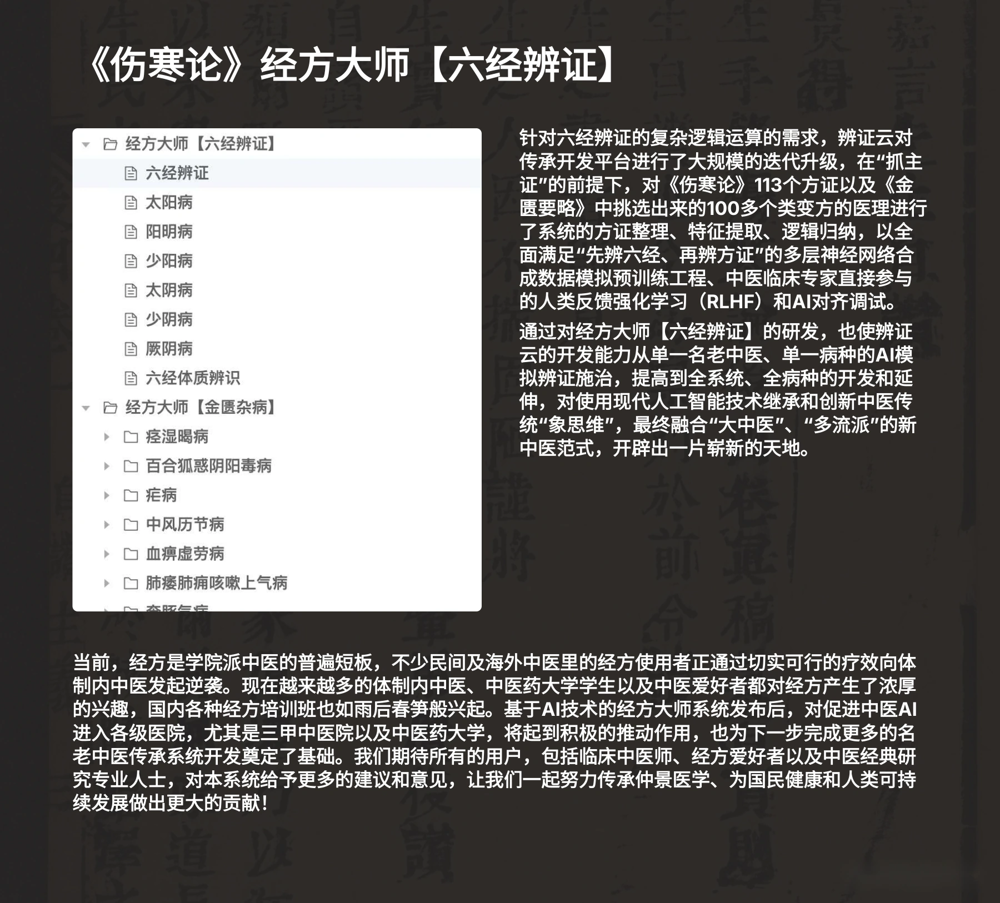
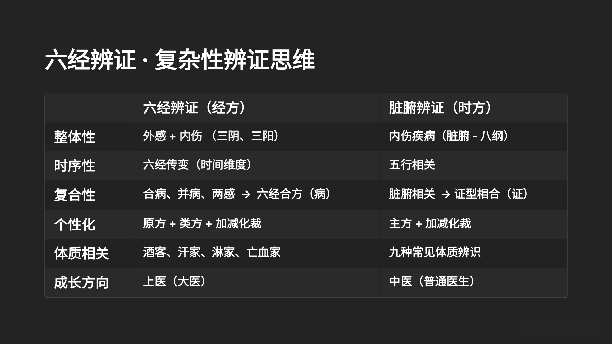
名老中医专科专病智能体开发
全面整合大语言模型，实现从临床诊疗路径到辨证思维链的智能化传承
智能咨询
基于大语言模型提供面向医生与患者的智能问答与咨询服务。
Deep Research
深入研究智能体开发应用，支持专病模型开发和人机对齐调试。
专病模型开发
从临床诊疗路径到辨证思维链，构建可学习、可复现的名老中医数字分身。
《伤寒论》经方大师【六经辨证】
先辨六经，再辨方证：多层神经网络解决复杂性辨证问题
系统整理与特征提取
针对六经辨证复杂逻辑运算需求，辨证云对传承开发平台进行了大规模迭代升级。在“抓主证”的前提下，对《伤寒论》113 个方证以及《金匮要略》中挑选出来的 100 多个类变方进行系统整理、特征提取与逻辑归纳。
多层神经网络与对齐调试
全面满足“先辨六经、再辨方证”的多层神经网络合成数据模拟预训练工程，中医临床专家直接参与人类反馈强化学习（RLHF）和 AI 对齐调试。
能力提升
经方大师项目使辨证云从单一名老中医、单一病种的模拟辨证施治，提升到全系统、全病种的开发与延伸，为融合“大中医、多流派”的新中医范式奠定基础。
应用价值
当前经方是学院派中医的普遍短板。基于 AI 技术的经方大师系统发布后，将促进中医 AI 进入各级医院、三甲中医院及中医药大学，为更多名老中医传承系统开发奠定基础。
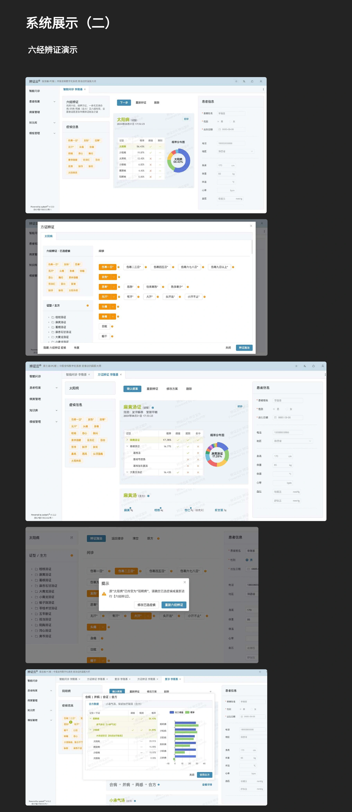
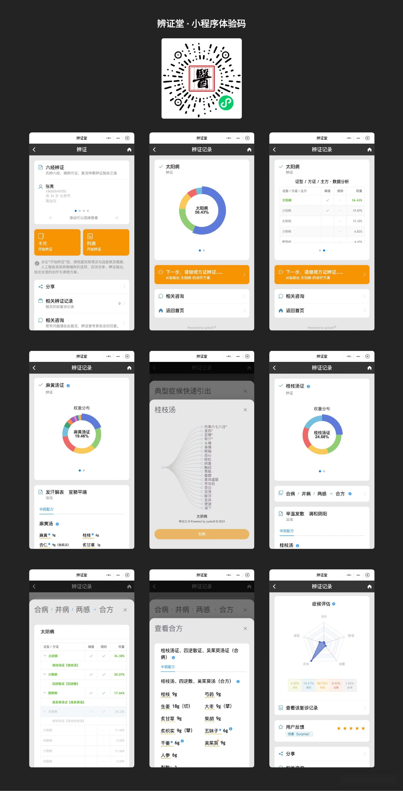
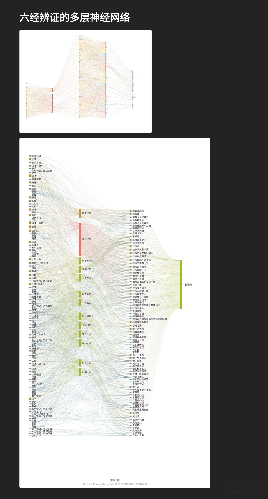
系统展示（二）
六经辨证演示与辨证堂小程序体验
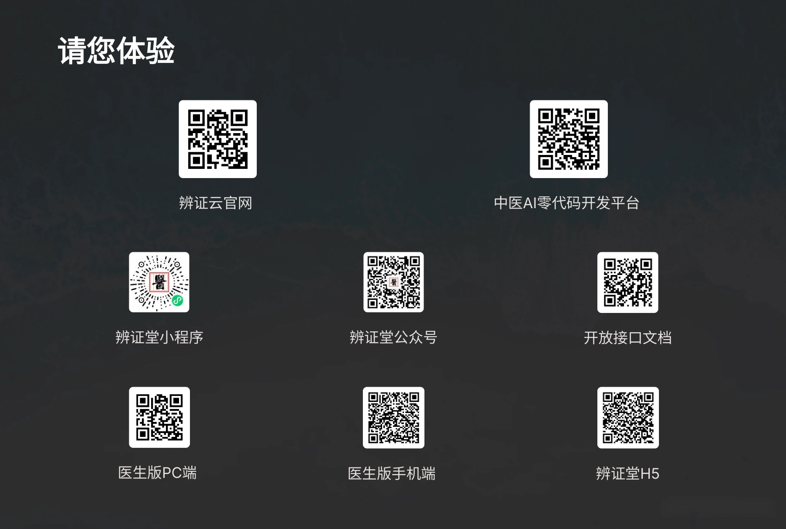
成功案例
从抗疫一线到基层医疗，从三甲医院到连锁药店，辨证云已在多场景落地验证
案例：辨证云中医 AI 助力香港抗疫
2022 年 2 月香港奥密克戎新冠疫情爆发，辨证云应邀为香港中医药临床研究中心及香港中医药龙头机构浸会大学开发部署了新冠中医 AI 诊疗与防控系统，助力香港医疗诊所与方舱医院开展新冠中医诊疗服务。
- 在香港诊所门诊、住院和启德方舱医院部署使用，赋能香港医生开展新冠中医诊疗服务，获得显著效果。
- 时任香港特首林郑月娥女士到现场视察，对这项独具创新的中医 AI 辨证系统给予了高度评价。
- 与香港浸会大学中医专家组合作，在一周时间内完成开发、上线和运行。
- 诊疗处方涵盖轻型、中型、普通型、高龄、危重型、体虚型加减方，儿童处方加减方，无症状感染、预防、康复、回访方案；包括 20 多种证型、30 多个主方和加减方、近百种颗粒剂中药和中成药。
- 联接医生端的患者自我管理系统，可开展居家线上咨询、自我监测评估、选择适宜中医治疗、康复和预防方案。
- 2022 年 4 月 3 日，香港浸会大学副校长卞兆祥教授向中央援港抗疫中医专家组组长仝小林院士等专家介绍新冠中医 AI 诊疗与防控系统部署应用成果。
- 系统提供精准数据分析和决策支持，对新冠临床医疗、全过程医疗大数据建立、临床研究，特别是针对全球 6 亿新冠感染者后遗症的研究及康复治疗具有重大意义。
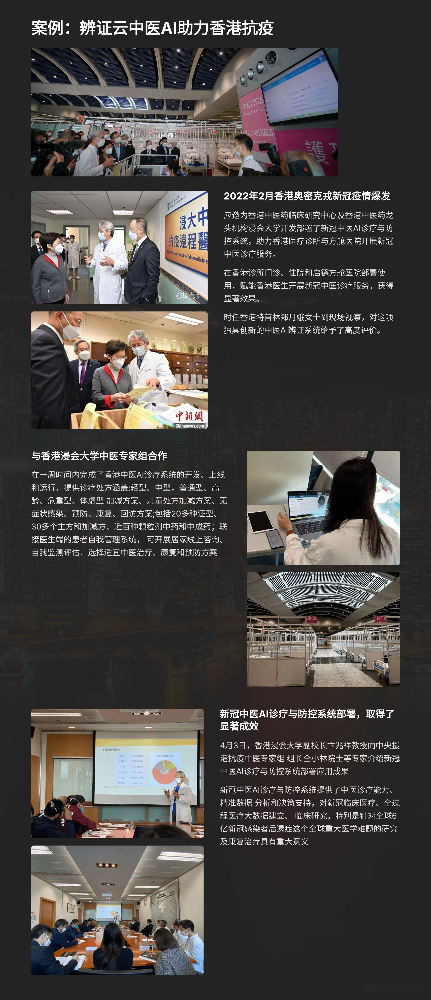
案例：借助讯飞“智医助理”平台，助力全国基层医疗
辨证云与科大讯飞合作，2023 年在安徽省亳州、滁州、宣城三个地级市的 330 余家乡镇卫生院落地应用；2024 年开始在全国 800 多个县域医联体的讯飞智医助理平台上推广应用，赋能基层中医药服务，推动人工智能时代的中医药深度发展。
2022 年 11 月，辨证云与科大讯飞合作，为乡镇卫生院提供先进的智医助理平台，整合辨证云中医 AI 辨证能力，已在省内亳州、滁州、宣城等地陆续上线，并在安徽省全面推广。新的中医 AI 辨证平台为乡镇卫生院的中医师解决了基层中医诊疗能力不足的问题，得到了省市级卫健委和卫生院的充分肯定；结合与当地 HIS 系统的联动，提供了全套完整的诊疗体验。
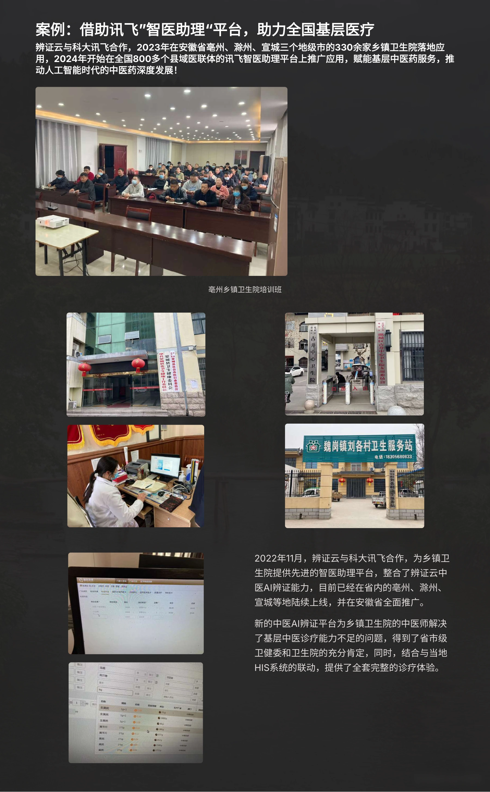
案例：北京同仁堂连锁药店及医馆
自 2004 年起，北京同仁堂与辨证云展开合作，先后在四通桥店、新街口店、安德路店、火器营店等多家药店和诊所引入辨证云中医 AI 平台。自平台投入使用以来，凭借其专业、精准的中医智能辨证能力，赢得了店员、顾客、医生及患者的一致好评与广泛认可。
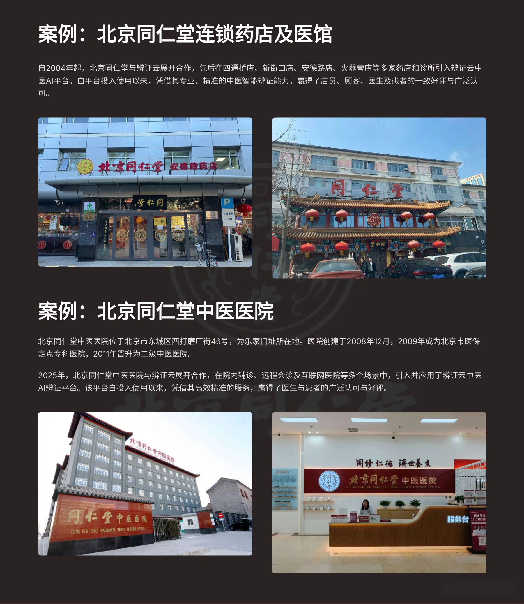
案例：潍坊市益都中心医院
潍坊市益都中心医院前身是 1882 年英国基督教浸礼会传教士创立施医所基础上组建的广德医院。现为三级甲等综合医院、国家住院医师规范化培训基地、国家疼痛综合管理试点医院、国家级标准版胸痛中心、国家高级卒中中心建设单位、国家药物临床试验机构等。
2025 年，医院全面启用辨证云中医 AI 辅诊平台。平台在中医科医生、中医医生及西学中医生中得到广泛应用，显著提升了中医问诊的效率与诊疗水平，获得了医患双方的一致好评。潍坊市作为国家第二批中医药传承创新试点城市，已与辨证云达成合作意向，计划共同开展中医 AI 数字分身的研发工作。
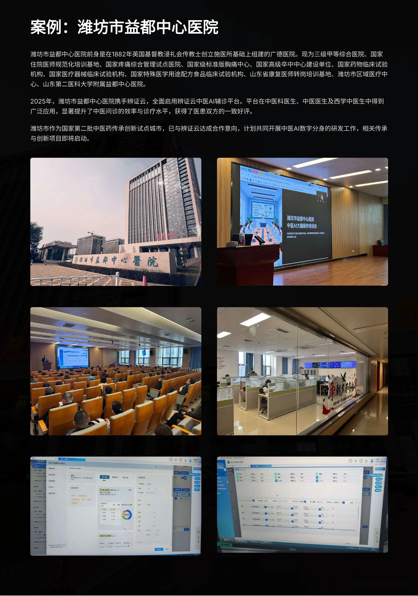
案例：浙江省中医院
浙江省中医院是全国知名的三级甲等中医医院，在中医临床、科研和人才培养方面具有深厚积淀；浙江省名中医研究院依托浙江省中医院设立，汇聚多位国家级、省级名中医，承担名医经验整理、学术研究与人才培养等重要任务。
浙江省中医院引入辨证云中医 AI 系统作为临床辅助工具，为中医医生提供智能辨证支持。系统基于中医经典理论和大量临床数据，对症状信息进行结构化分析，辅助医生进行证候判断和思路梳理，提供安全、有效的中医辨证治疗方案，大幅提升医生的辨证能力、规范性与效率，尤其在青年医生培养和复杂病例分析中发挥积极作用。
同时，辨证云与浙江省名中医研究院开展深度合作，围绕名中医临床经验的数字化与智能化传承，通过系统化采集、整理和建模名中医的诊疗思路与辨证经验，基于辨证云零代码开发平台的基础模型和专病模型，训练中医 AI 数字分身智能体，实现可学习、可复现的智能传承成果。
在系统落地方面，由于 HIS 厂商卫宁之前合作的中医 AI 辅诊能力不足，无法满足院方需求，辨证云中医 AI 系统通过嵌入式接口与医院现有信息系统无缝对接，并与 HIS 厂商卫宁健康开展合作，实现与医院 HIS 系统的深度集成，确保临床使用流程自然顺畅，不增加医生额外负担，为中医智能辅助在大型医院的应用提供了成熟示范。
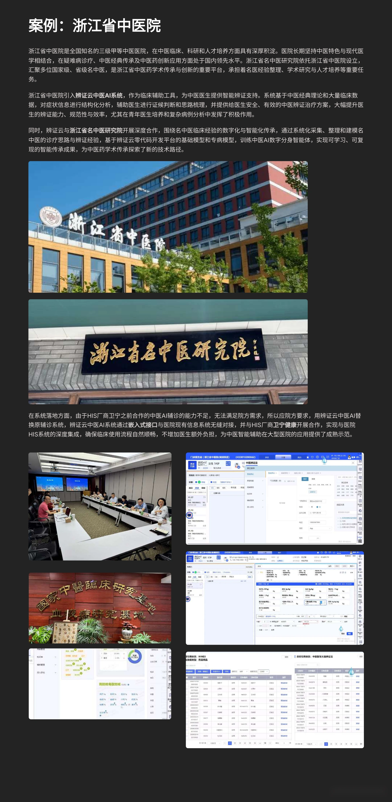
案例：宁夏固原市中医院
2024 年 4 月，宁夏回族自治区固原市中医院使用辨证云中医 AI 智能辅诊系统后，进一步提升了医疗服务水平和患者满意度，得到中医专家的一致高度好评。
系统开创性地基于六经辨证理论进行问诊，通过 AI 技术对患者病症进行全面分析，提供精准辨证治疗方案。固原市中医院的医务人员表示，系统引入为临床工作带来极大便利；一位内科主任提到：“以前需要花费大量时间在患者诊断和辨证上，现在可以更专注于治疗和康复，效率提高了很多，患者满意度也大幅提升。”
患者反馈同样积极。一位糖尿病患者感慨道：“自从用了这个系统，医生的诊断更加准确，药方也更对症了，各种症状均控制得比以前好多了。”
宁夏回族自治区固原市西吉县吉强卫生院的中医师刘嫣楠和邓娜，自 2022 年毕业入职以来，在基层医疗工作中获得中医 AI 辅助诊疗系统的有力支持。该系统通过智能辨证、经典方剂推荐和电子病历管理等模块，有效提升了青年医师的诊疗效率。
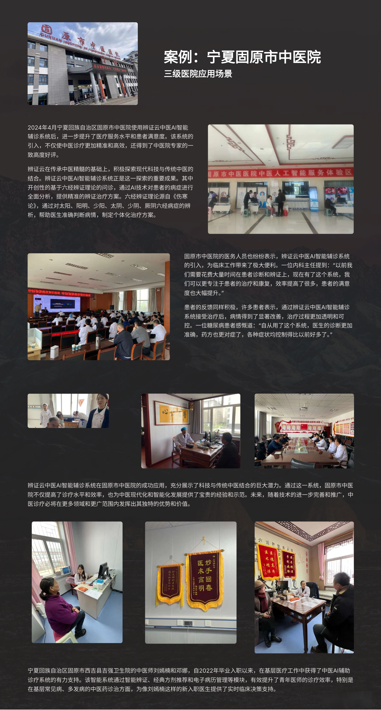
案例：人工智能赋能村医的“旌德模式”
安徽省旌德县借力辨证云中医 AI 的基层医疗健康服务融合创新模式。旌德县地处皖南山区，素有“中国灵芝之乡”“中国宣砚之乡”“国际慢城”等称号，全县面积 904.8 平方公里，人口 15.2 万，辖 10 个镇、68 个村（社区）。
作为安徽省人口最少的山区县之一，就医看病成为当地困扰。宣城市委原常委、旌德县委原书记周密指出：与过去“缺医少药”相比，现在农村关键不是“缺药”而是“少医”。
2017 年 9 月，旌德县在全国率先启动全科医生助手机器人试点项目，决心通过人工智能赋能基层医疗，实现智能分级诊疗。旌德县以建立“医共体+医联体+健康网”为框架，运用“互联网+人工智能”为手段，以“健康扶贫+智慧医疗”为新路径，先后在全县 8 个贫困村、17 个非贫困村、1 个社区卫生服务中心，以及所有镇卫生院和县级医院共投放 40 台助手机器人进行试点。在试点运行一年基础上，计划在未进行试点的 34 个村卫生室和县级医疗卫生机构再投放 40 台，实现全县医疗机构全覆盖。
智能机器人提供的中、西医诊疗功能，可有效辅助村医对常见病、多发病患者进行更加精准的诊断与治疗。学西医出身的村医江繁荣说：“以前我不太懂中医，不会开方子，现在有了机器人的辅助，还有县里组织的知识培训，我也能为一些慢病患者提供中医诊疗服务了。敢开中药方子，底气主要来自两个方面：一是助手机器人的中医专家诊疗系统汇集了国家级名老中医临床经验，经过 200 多位国医大师的验证，开出的方子科学可靠；二是可以随时与县医院中医科医生杨后长视频连线，在其实时指导下开展中医诊疗。”
在世界银行/泛美开发银行年度政策对话（Regional Policy Dialogue）上，专门介绍全科医生助手机器人与“旌德模式”；《柳叶刀》中国基层医疗专题报告（Lancet Commission Report）也将“旌德模式”作为创新案例纳入其中。2018 年 5 月，《瞭望》刊登《贫困村迎来“智慧医疗”》专题报道；同年 12 月 16 日，国务院深化医疗卫生体制改革领导小组简报重点提到旌德县借力人工智能的基层医疗健康服务融合新模式。国务院发展研究中心宏观经济研究部副研究员江宇评价指出，旌德县“健康扶贫+智慧医疗”改革是我国深化医改的突出案例。
著名经济学家厉以宁教授和夫人到旌德县视察时，时任旌德县挂职副县长、安徽省卫健委中医发展处处长吴振宇使用辨证云中医 AI 辅诊系统为厉老夫人现场辨证施治；国医大师徐经世莅临指导，对中医 AI 辅诊能力给出了高度评价；世界银行/世界卫生组织贷款中国医改促进项目专家督导团也对旌德县人工智能试点项目进行了考察。
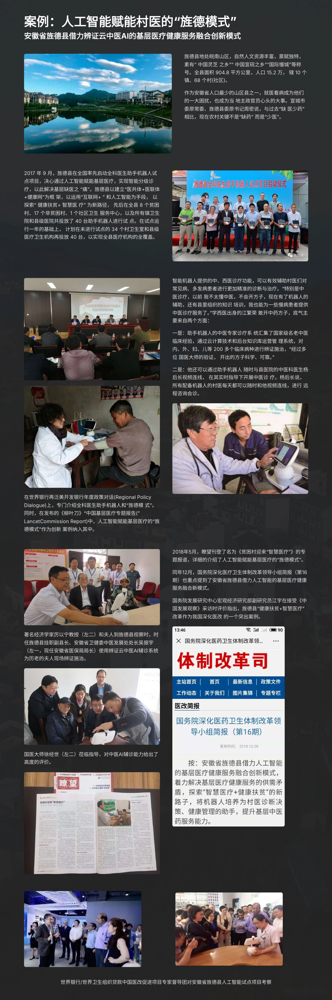
中医数智传承零代码开发平台
无代码操作即可开发中医专科辨证施治服务模块，高效建立中医专科 AI 云服务平台
零代码模块开发
中医数智传承零代码开发平台可进行无代码操作开发中医专科（名医名家、地方特色中医）辨证施治服务模块，高效建立中医专科 AI 云服务平台，打造特色中医 AI 云传承工作室。
人机对齐调试（AI Alignment）
可以实现对症候、证型、中药配方的精细式测试，确保模型输出与临床专家经验高度一致。
合成数据训练（Synthetic Data Training）
可通过人工设置对非典型证候进行随机遍历，生成以“主证优先”的偏好数据训练集，在较低算力要求下实现人类监督下的强化学习（RLHF）。
快速构建个人/机构专病系统
使用先进的辨证云中医 AI 零代码开发平台，快速开发出属于用户自己的中医辨证智能系统。
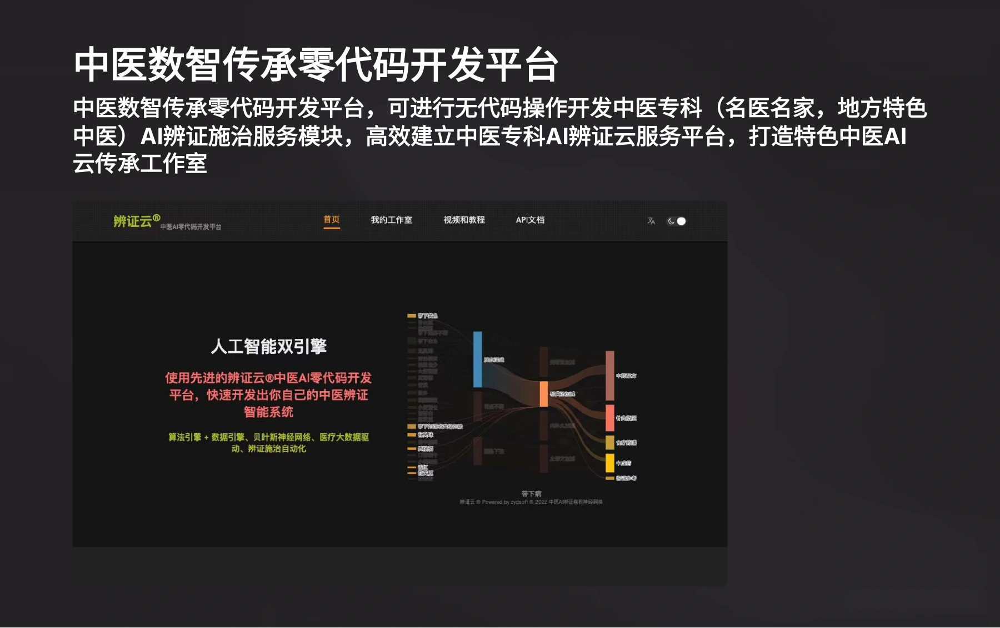
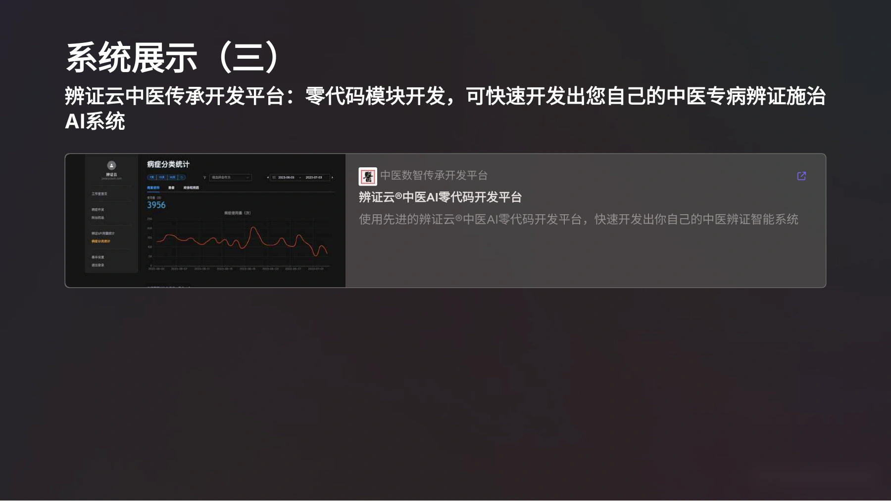
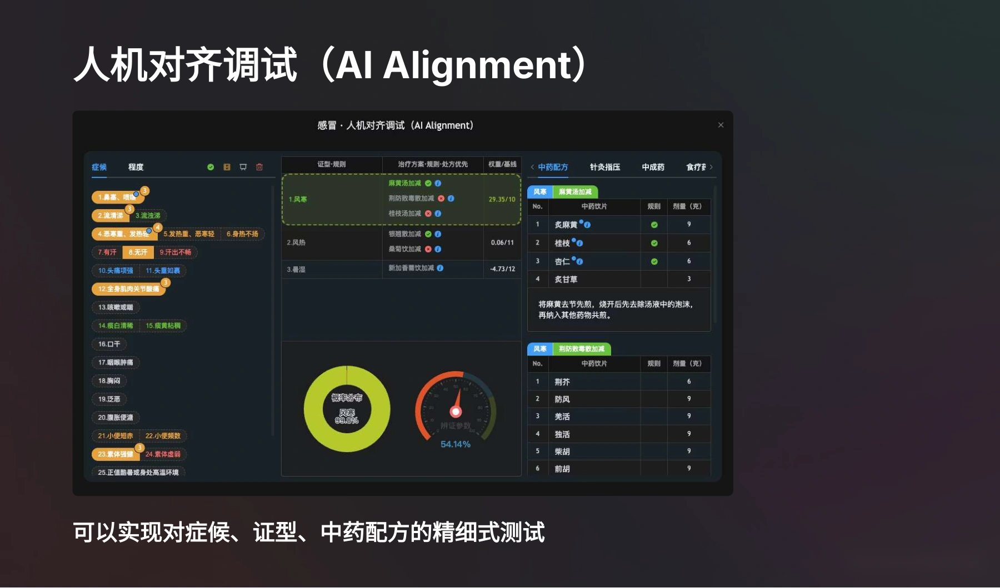
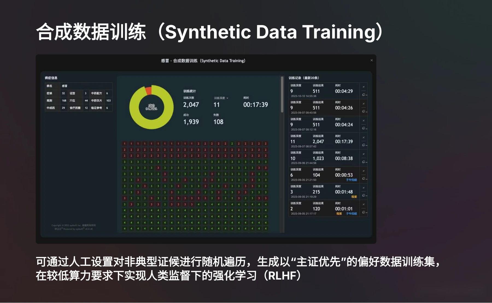
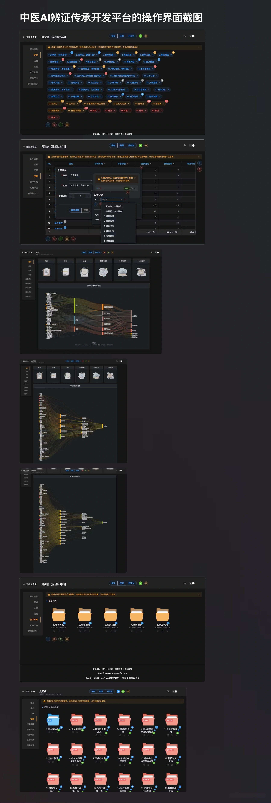
智能体传承国医大师徐经世临床诊疗精华
AI 驱动的名医数智传承，将国医大师经验数字化、智能化、规模化传承
徐经世：中医的践行者与传承者
徐经世国医大师是当代中医领域的领军人物，创立“杂病因郁，治以安中”“肝胆郁热，脾胃虚寒”等病机理论；提出“治肝三十二字法”“治脾胃三原则四要素”“扶正祛邪治肿瘤”“妇科诸病从肝论治”等新方法新理论；组织参与“肝豆汤”研发，开创中西医结合治疗肝豆状核变性先河；研制“扶正安中汤”“消化复宁汤”“迪喘舒丸”等专方。
辨证云：中医传承的新引擎
辨证云平台利用云计算、大数据和人工智能技术，将中医药知识体系与临床经验数字化、智能化，实现资源共享与传承。平台的核心优势在于强大的数据处理和分析能力，能够提供智能诊断、个性化治疗方案及药物推荐，为中医药研究和教育提供坚实数据支持。
完美结合：经典理论与临床经验
在徐老指导下，辨证云平台融入大量经典中医理论，并结合徐老丰富临床经验与独特诊疗思路，将【胃脘痛】、【外感热病】、【内伤热病】和【1、2 型糖尿病】等病症的多年宝贵临床经验灌输到平台中，使平台在继承传统中医精髓的同时具备更强实用性和前瞻性。
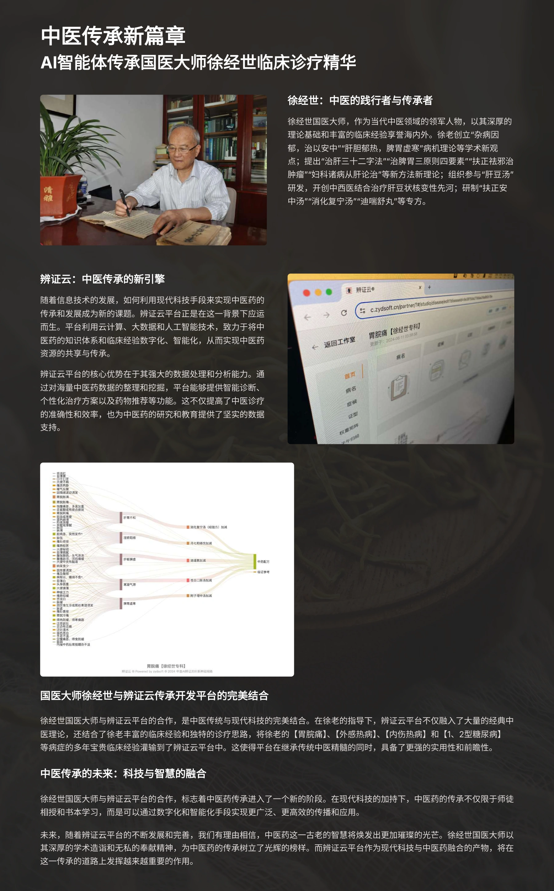
智能体传承国医大师朱良春临证精髓
中医界第一个 AI 驱动的“名医数智传承工作室”，精准复刻与规模化传承名医经验
国医大师朱良春数智传承工作室是中医界第一个 AI 驱动的“名医数智传承工作室”，解决了名老中医传承的关键痛点——AI 精准复刻和规模化传承了名医大家的精湛医术和诊疗经验。以辨证云平台人工神经网络为核心技术开发的朱良春国医大师系列优势病种和名医数智传承工作室，实现了数智化时代的社会效益和经济效益并举，打造出中医行业守正创新高质量发展的新模式。该项目是国家卫健委科研所人工智能重点实验室全方位支持的研究课题之一。
朱良春（1917-2015），首届国医大师，当代著名中医药学家，深耕中医领域 80 余年，丰富了中医望诊诊法，首倡辨证与辨病结合，致力于临床疑难杂病研究，如强直性脊柱炎、淋巴瘤等，善于使用各种虫类药，临床疗效显著。
合作服务内容
- 朱良春学术传承人与中医辨证云合作，AI 精准复刻国医大师朱良春的专科智能体。
- 朱婉华教授团队对数智传承工作室医生提出的临床问题提供 24 小时内答疑回复。
- 每季度提供一次线下临床带教、现场坐诊及培训。
- 提供疑难杂症远程会诊。
- 合作医院可优选主治以上中医师前往南通良春中医医院进修不少于 3 个月，考核合格可获拜师资格；副主任以上医师可拜朱婉华教授为师，带教时间 3 年，每年不少于 30 个半天门诊。
- 围绕“益肾蠲痹法治疗风湿病”“扶正消癥法治疗肿瘤”等独特诊疗方法及医院制剂开展合作。
- 每年召开学术年会，基于数智传承平台积累的海量数据和 AI 自动复诊、疗效评估数据共同发表学术论文。
落地推广
目前国医大师朱良春数智传承工作室已在宁夏自治区中医医院正式启用，受到专科医师和患者的普遍欢迎，并正在向全国其他省市的等级中医院推广应用；北京同仁堂医馆和其他省市的中医院合作也在逐步实施中。
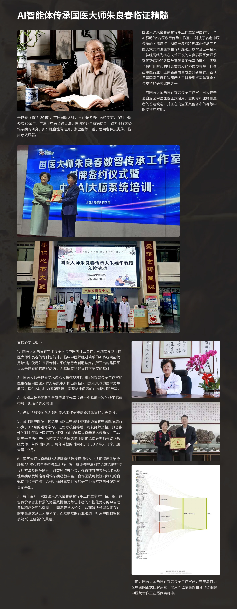
更多中医 AI 传承数字分身项目
跨科室、跨医院、跨区域，构建可数字化传承、智能化应用的中医数字分身体系
上海市光华中西医结合医院
类风湿性关节炎中医 AI 传承数字分身
辨证云携手广西医科大学，共同推进上海市光华中西医结合医院“类风湿性关节炎”中医 AI 传承数字分身的研发与建设。项目将资深中西医结合诊治类风湿性关节炎的临床经验与思维模式，通过人工智能与数字技术进行系统化整合与复刻，构建可深度学习、动态优化的数字化传承体系，探索中西医结合在慢病管理中的创新模式。
山西省儿童医院
中医 AI 传承数字分身
辨证云携手中国联通北京电信规划设计院有限公司共同推进，依托山西儿童医院中医科在特定优势病种方面的诊疗经验，构建可数字化传承、智能化应用的“中医 AI 数字分身”系统。项目实现名老中医学术经验与诊疗模式的数字化传承与推广，开创以区域标杆医院为核心、向医联体及医共体辐射推广的可持续商业模式。
孔医堂与辨证云传承开发平台
京城四大名医孔伯华医学遗产数字化
孔伯华先生作为京城四大名医之一，强调中医应照顾病人整体，特别强调“元气”。孔令谦先生作为后人，与辨证云平台合作，将祖辈医学经验和自己临床心得进行数字化、系统化整理，共同开发了【孔门医学】的胃脘痛、流行性腮腺炎、失眠、冠心病、风湿性关节炎、缠腰火丹、无名高热等数十种病症。
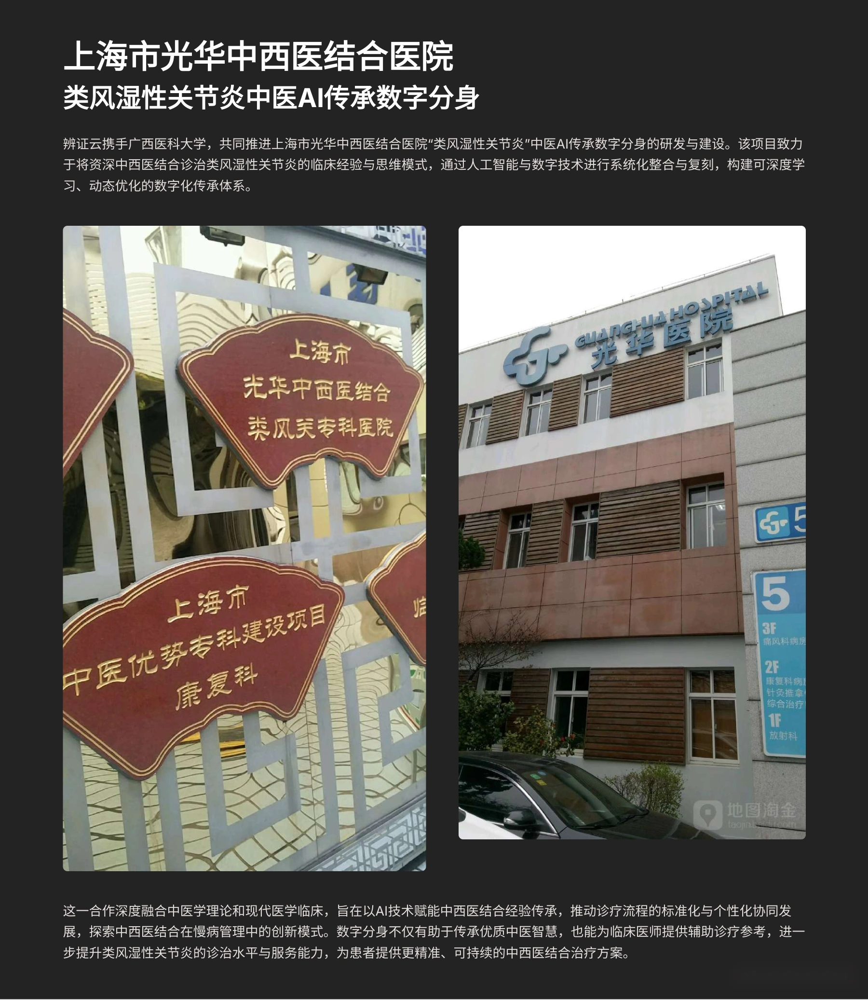
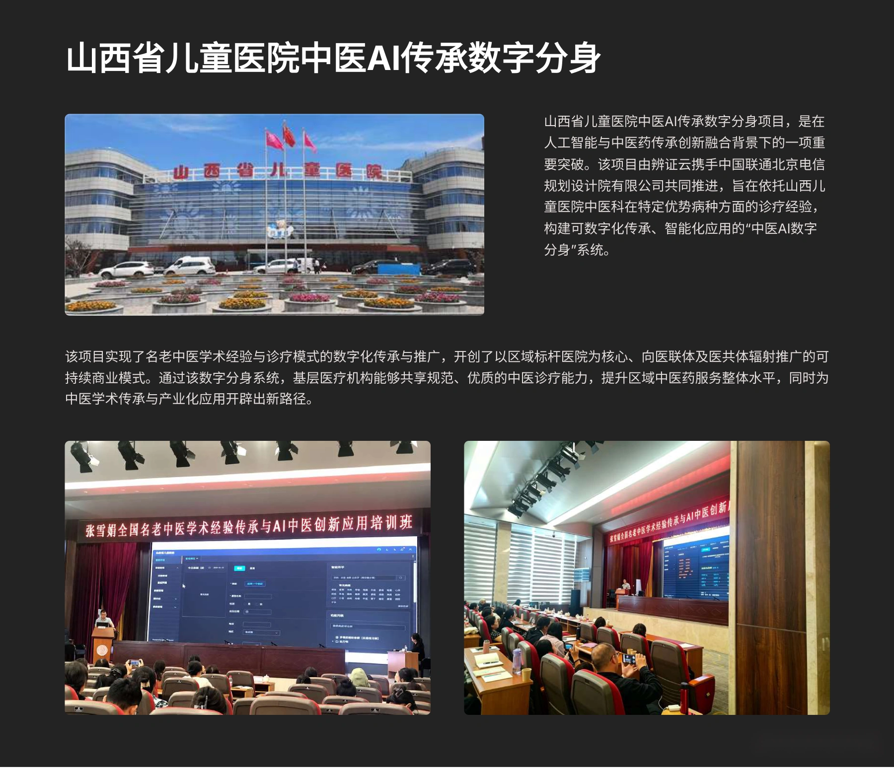
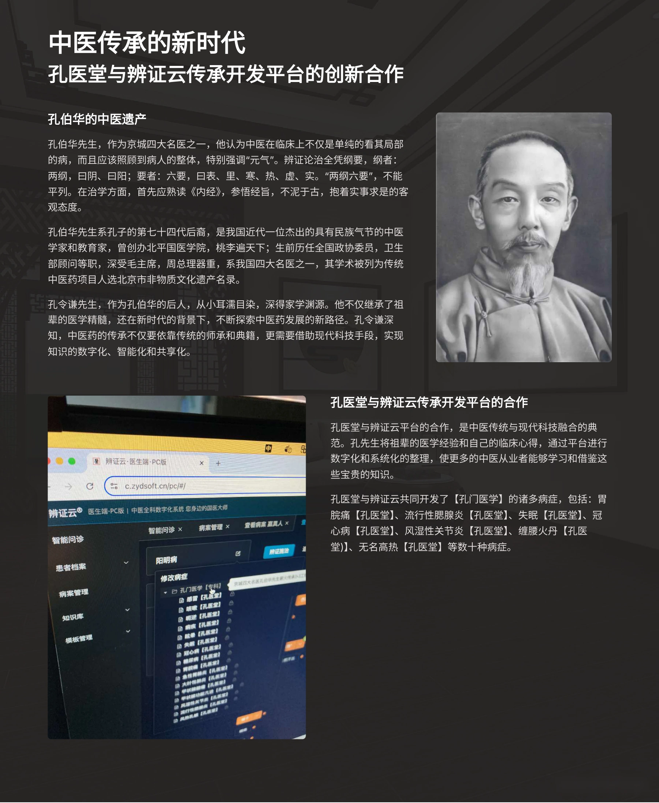
系统平台场景：建立线上线下服务闭环
中医 AI 互联网医疗 + 腾讯生态，打造全流程医患连接与健康管理
中医 AI + 互联网医疗
患者就医与医生建立连接 → 医生通过平台辅助辨证、开方 → 平台进行订单审核下传 → 药品调剂中心审核、调配、代煎、配送 → 患者收药、治疗、随访、远程复诊。形成从问诊到康复的完整闭环。
中医 AI + 腾讯生态
依托微信、企业微信、服务号、小程序、微信支付、腾讯云等腾讯生态能力，构建私域医疗，助力基层医疗和综合医院；利用腾讯生态实现电商、药店结合，为患者提供线上线下全流程服务。
医患链接应用场景
通过“公告”功能实现企业内部对文档、图片、通知等的分权限、分组别、分范围分享；结合客户标签和群发功能实现对外部患者的分组推送，针对不同标签组患者进行个性化推送和管理；支持直播健康讲座。
问诊开方场景
用户注册并添加患者信息及家庭组子账户 → 通过微信扫码完成“分诊”（待诊状态）→ 通过中医 AI 问诊开具处方 → 患者通过微信查看订单并支付 → 系统管理员在后台查看订单、配药发货 → 通过慧商佳操作台实现远程疗效评估和复诊。
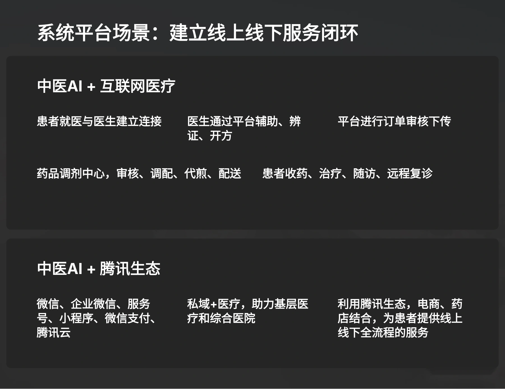
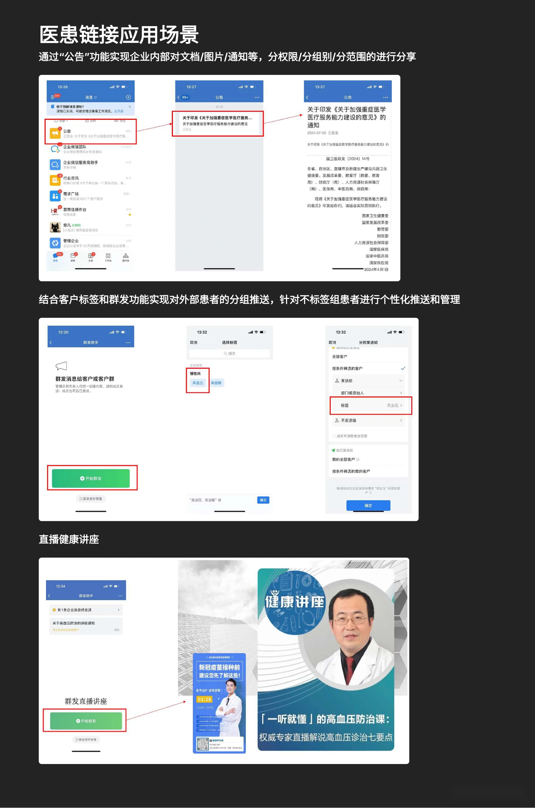
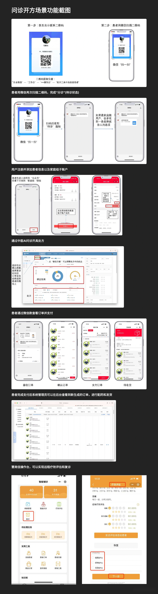
请您体验
多种入口，欢迎了解与试用辨证云中医 AI 数智平台
辨证云官网
c.zydsoft.cn
辨证云医生端 PC 版入口
中医 AI 零代码开发平台
快速开发您自己的中医辨证智能系统
面向机构与开发者
辨证堂
小程序 / 公众号 / H5
患者端与医生版手机端